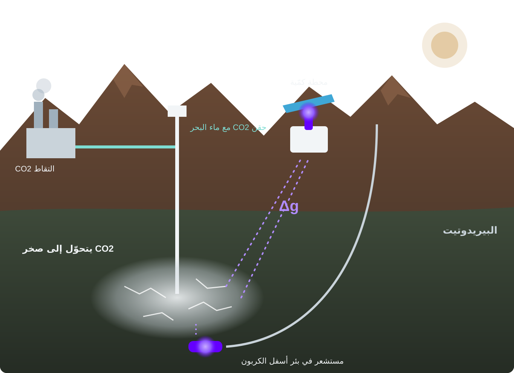

كيو-ميزان
مستشعرات كمّية تزن ثاني أكسيد الكربون الذي يتحوّل إلى صخر في جبال الفجيرة.

إذا تحوّل الكربون إلى صخر، فيجب أن نستطيع وزنه.
في الفجيرة يُذاب ثاني أكسيد الكربون في ماء البحر ويُضخّ في صخر البيريدوتيت، وهو صخر يتفاعل معه ويحبسه على شكل كربونات صلبة. ويجب إثبات بقاء كل طن في مكانه قبل أن يُحتسب ضمن هدف الحياد المناخي أو يحصل على أرصدة كربون.
يستخدم كيو-ميزان مقاييس جاذبية كمّية، وهي مستشعرات تعتمد على سحب من الذرّات فائقة البرودة تسقط داخلها، لقياس الزيادة الضئيلة في قوة الجاذبية كلما تراكم الكربون تحت الأرض. ارتفاع الجاذبية يعني وصول الكربون، وثباتها يعني أنه باقٍ في مكانه.
ثلاثة أجزاء، ميزان واحد
مقاييس جاذبية كمّية
محطات سطحية تعمل بالطاقة الشمسية، ومستشعر نحيف في بئر أسفل الكربون، تقيس الجاذبية بدقة تقارب جزءاً من مليار من g.
سجلات آمنة كمّياً
تُوقَّع كل قراءة برموز مقاومة للحوسبة الكمّية، فلا يمكن تزوير سجلات أرصدة الكربون.
سجلّ الكربون
شهراً بعد شهر، تحوّل الشبكة قراءات الجاذبية إلى أطنان محبوسة في الصخر، وتطلق تنبيهاً إذا تحرّك أي شيء.
التحدي
ما الذي يحدث في الفجيرة، ولماذا يصعب إثباته.
اقرأ ←التقنية
تعرّف خطوة بخطوة على كيف يزن مقياس التداخل الذرّي الأرض.
اقرأ ←مختبر المحاكاة
ثلاثة نماذج تفاعلية: قوة الإشارة، والمراقبة عبر الزمن، وخريطة المستشعرات.
افتح المختبر ←الأثر
ماذا يعني للإمارات وللناس وللعالم، وحدودنا بصراحة.
اقرأ ←الأبحاث
الاكتشافات التي نبني عليها من 1992 إلى 2026، مع المصادر.
اقرأ ←الفريق
خمسة طلاب من مدارس التكنولوجيا التطبيقية – أبوظبي بنين.
تعرّف علينا ←